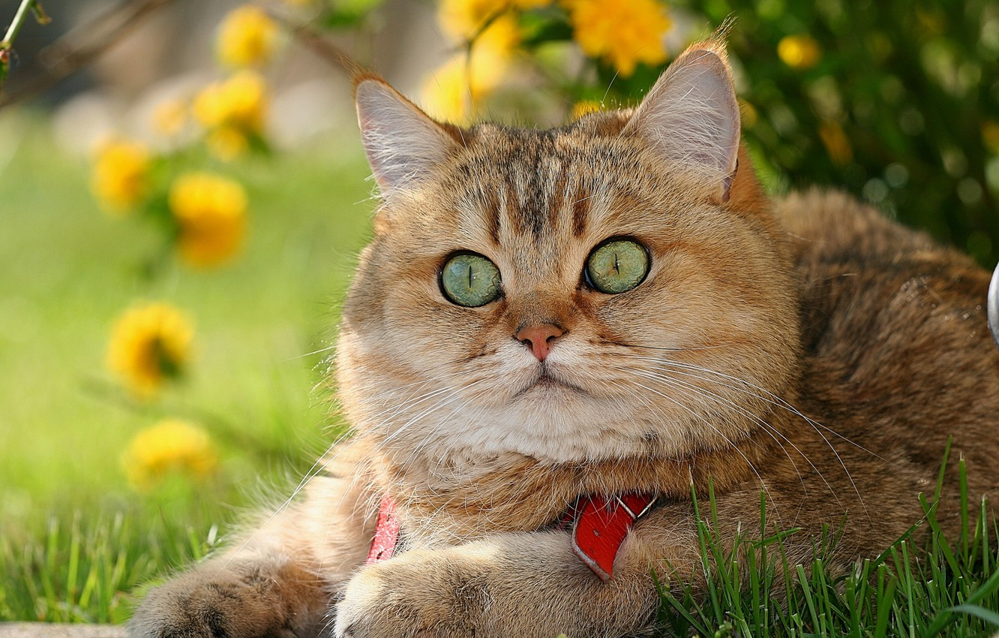
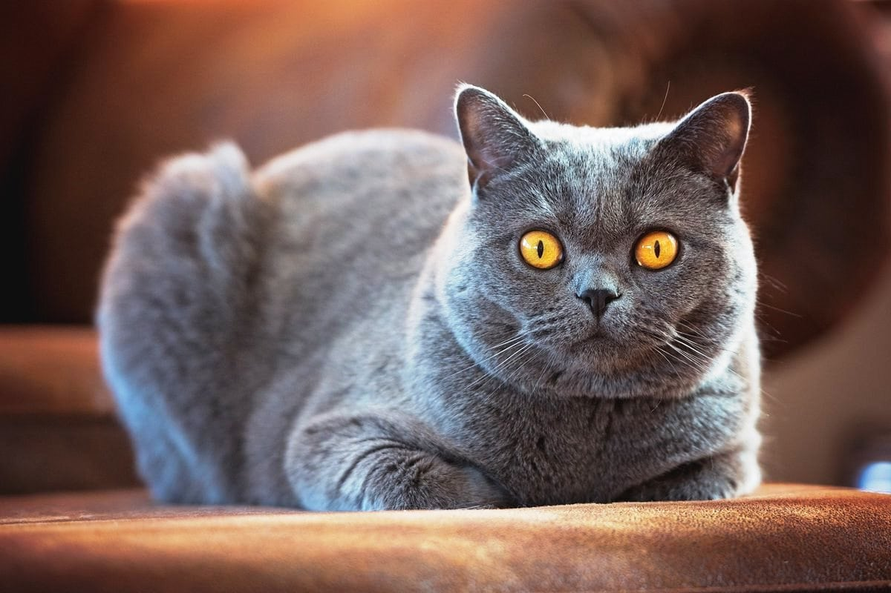

British Shorthair
Британская короткошёрстная
Британские короткошерстные кошки являются традиционной английской породой и гордостью Великобритании.
Льюис Кэрролл в своей книге «Алиса в стране чудес» описал в образе всем известного Чеширского кота именно британскую
короткошерстную породу.
Однако история появления в Британии этой породы до сих пор точно не известна. По одной из версий эти кошки
попали в Англию более 2000 лет назад с римскими легионерами, по другой версии - прибыли в роли корабельных котов на
судах Франции. Какая бы из версий не оказалась верна, эти кошки довольно быстро прижились и завоевали популярность среди
англичан. Они долгое время существовали как простые домашние кошки, пока в 19 веке заводчики не начали вести
селекционную работу, целью которой было выведение отдельной породы.
В настоящее время британская короткошерстная кошка –
одна из самых популярных пород и горячо любима во многих странах.
Происхождение и история породы

Несмотря на то, что предки британских котов обитали на фермах и городских улицах, они наиболее популярны среди любителей
кошек. «Отцом» породы можно назвать Гаррисона Виера, считающегося первым профессиональным заводчиком котов и
составившего правила для первой кошачьей выставки, состоявшейся в Великобритании в 1871 году.
Гаррисон взял скромную уличную кошку из Великобритании и с помощью интенсивной программы разведения превратил ее в
чистокровную породу, которую он назвал британской. Британцы влюбились в свою новую породистую кошку. Когда персидские
кошки были завезены в Великобританию, они временно вытеснили британских короткошёрстных с их места самой популярной
породы на острове. Во время Второй мировой войны, как и во время Первой, британская короткошерстная порода была почти
истреблена, но она всегда возвращалась на высшие строчки популярности. Сегодня британская короткошерстная кошка занесена
в соответствующие реестры по всему миру. В свое время она была известна как британская голубая, но так как она
встречается в самых разных цветах, ее называют британской или британской короткошерстной кошкой.
Характер

Британские короткошерстные кошки довольно спокойные животные, у них хорошо развито чувство собственного достоинства и
высокий интеллект. Они очень ласковые, и добродушные, преданы своим хозяевам, любят детей и уживаются с другими
животными, однако фамильярного отношения к себе не потерпят. Они не настолько игривы, как кошки других пород и
отличаются своей независимостью. Именно независимость сделала их любимой породой занятых людей и бизнесменов. Британцы,
как правило, привязываются абсолютно ко всем членам семьи, не выбирая себе одного хозяина. Они станут прекрасными
домашними любимцами, особенно если человеку нравятся умные и нетребовательные кошки.